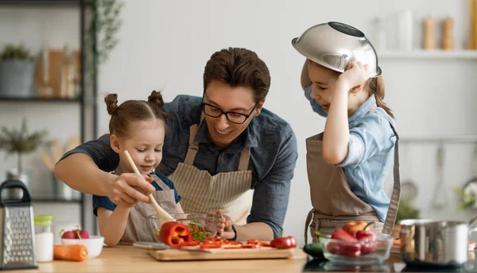

Ingredientes (10 porções)
4 ovos.
4 colheres (sopa) de chocolate em pó
2 colheres (sopa) de manteiga.
3 xícaras (chá) de farinha de trigo.
2 xícaras (chá) de açúcar.
2 colheres (sopa) de fermento.
1 xícara (chá) de leite.

Cozinhar em família pode trazer vários benefícios, como a criação de memórias, o desenvolvimento de habilidades e o fortalecimento dos laços afetivos.

Benefícios para as crianças
Desenvolve habilidades
motoras, como picar, amassar e mexer
Desenvolve noções de ordem e matemática
Desenvolve responsabilidade
Desenvolve trabalho em equipe
Desenvolve paciência
Desenvolve conhecimentos
multidisciplinares
Desenvolve vínculos com os pais, familiares e amigos